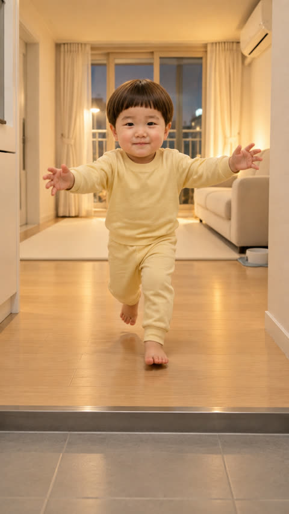
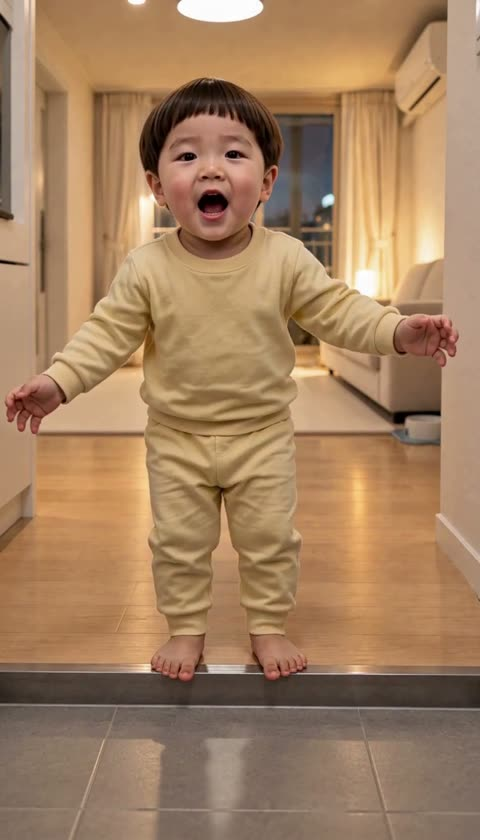
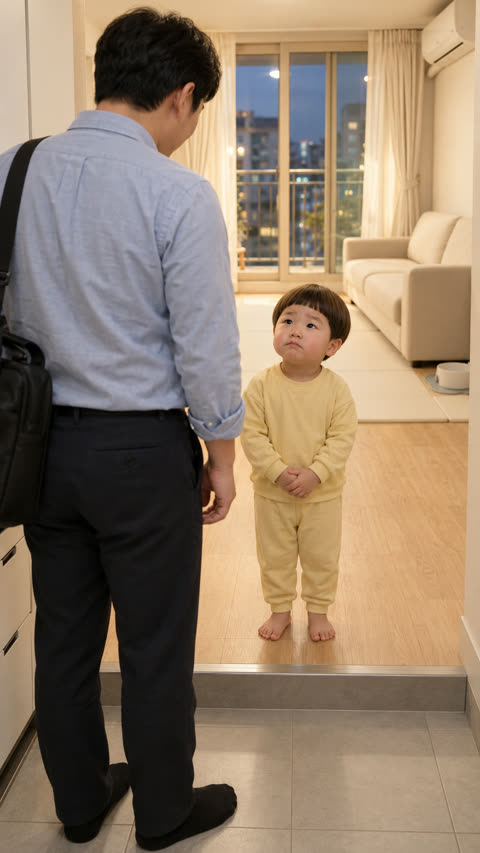
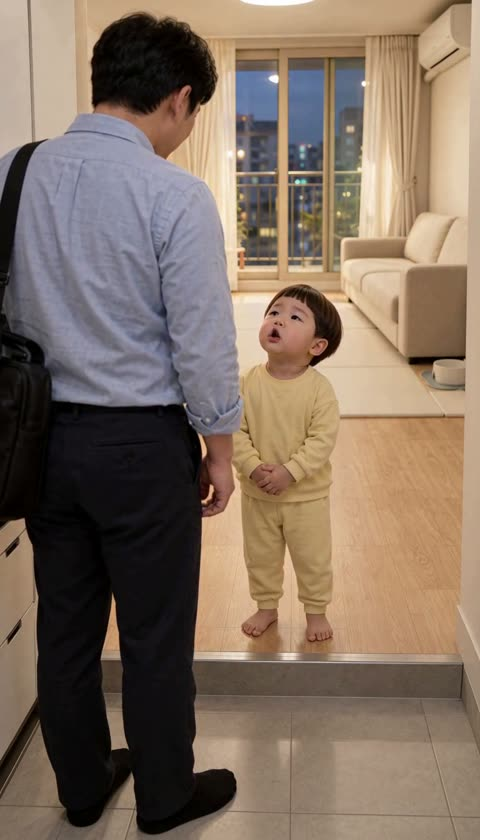
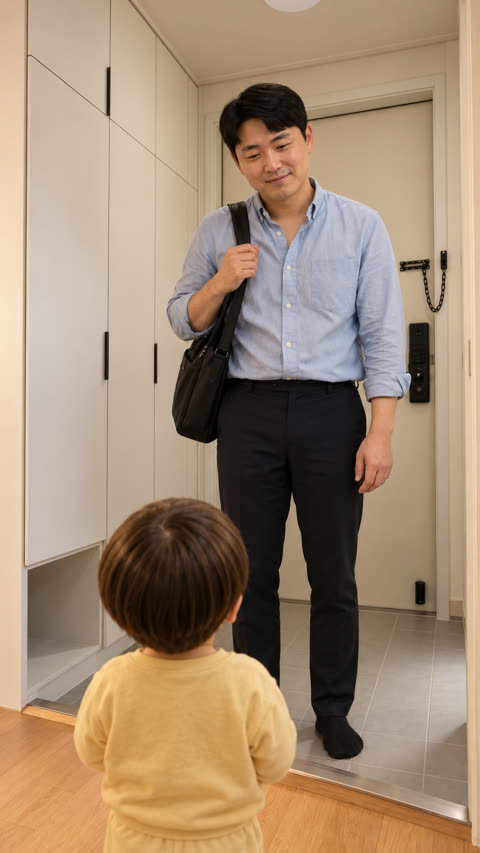
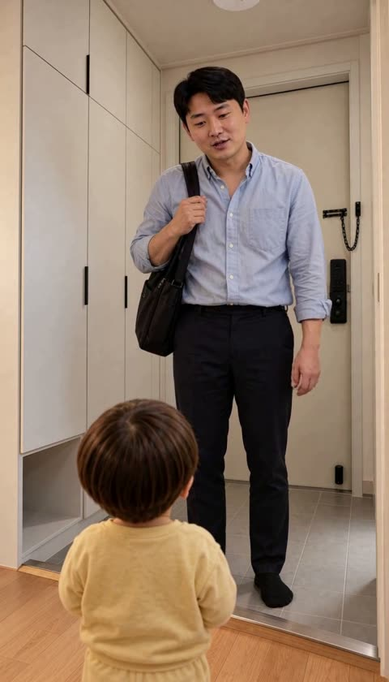
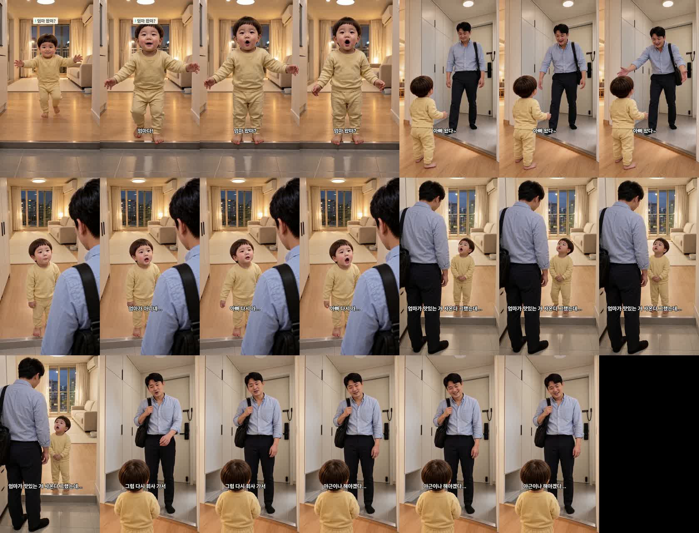

아빠 왔다~ 완성본 (R28) — 확인 부탁
19.9초 · 5컷 · 정식 Omni(목소리 그대로) · 등록 안 함 — 대표님이 보시고 정하십니다.
원인: 프롬프트가 아니라 «씨앗(seed) 42 고정»
- 터진 편 시절(10-10~15)은 작업마다 씨앗이 달랐습니다(171작업 171씨앗). 지금은 162작업 중 151개가 같은 씨앗 42였습니다.
- 씨앗이 같으면 지시문을 고쳐도 H3가 같은 그림을 다시 냅니다. 그래서 1컷 턱 넘기·5컷 옆 방문이 몇 번을 고쳐도 반복됐습니다. 시작 그림에서 벗어난 비율도 16% → 38%로 늘었습니다.
- 같은 지시문에 씨앗만 바꾸자 1컷은 턱 위에서 멈췄고, 5컷은 방문이 사라졌습니다. → 작업마다 다른 씨앗을 쓰도록 코드에 고정했습니다(시험 2개 추가).
- 4컷은 씨앗 세 개 모두 같은 구도로 나와 다른 원인이었습니다. 명세에는 «아빠 허리 위», 시작 그림에는 «아빠 전신»으로 서로 어긋나 있어서, 명세를 시작 그림에 맞췄습니다.
고친 3컷 (왼쪽 시작 그림 · 오른쪽 영상)
1컷 «엄마다! 엄마 왔떠?» 나무 바닥 끝 턱 위에서 두 발로 멈춤 — 타일로 안 내려옴


4컷 «엄마가 맛있는 거 사온다 그랬는데…» 시작 그림 구도 그대로(아빠 전신 뒷모습·도윤 턱 위)


5컷 «그럼 다시 회사 가서 야근이나 해야겠다…» 현관문 옆 방문 없음 · 시작 그림 구도 그대로


대표님이 봐 주셔야 할 것
- 5컷 아빠 표정이 «시무룩»보다 웃는 쪽입니다(씁쓸한 웃음으로 볼지).
- 도윤이 목소리 높이: 3컷 327Hz · 4컷 291Hz — 경고선 330Hz 아래입니다(1컷 444Hz). 직접 들어 봐 주세요.
- 4컷 전사에 «사온다고 그랬는데»로 «고»가 한 글자 더 들립니다.
- 3·4컷(현관에서 거실 쪽을 보는 컷) 왼쪽 가장자리에 흰 수납장이 보입니다. 현관 기준이면 신발장은 반대쪽이어야 해서 거울처럼 뒤집혔을 수 있습니다(지난판부터 같은 시작 그림).
컷별 측정
| 컷 | 판 | 말하는 사람 | 음높이 | 전사 |
|---|---|---|---|---|
| 1 | R23 새 씨앗 | 도윤 | 444Hz | 엄마다! 엄마 왔어? |
| 2 | R15 | 아빠 | 193Hz | 아빠 왔다~ |
| 3 | R15 | 도윤 | 327Hz | 엄마가 아니네 아빠 다시 가 |
| 4 | R28 명세 수정 | 도윤 | 291Hz | 엄마가 맛있는 거 사온다고 그랬는데 |
| 5 | R25 새 씨앗 | 아빠 | 140Hz | 그럼 다시 회사 가서 야근이나 해야겠다 |
1초 간격 전체

썸네일(지난판 시안)